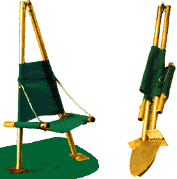
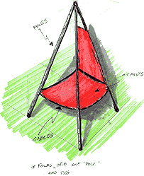
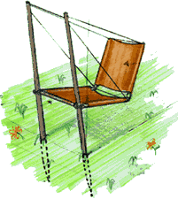
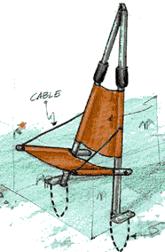
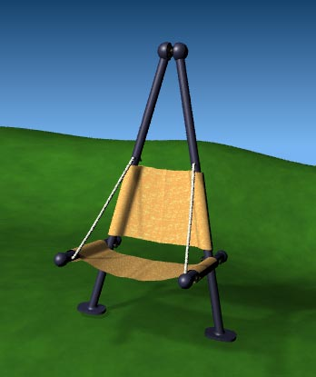

For this two-week folding chair project, I wanted to make a folding lawn chair that did not follow the traditional lawn-chair assumptions. My chair utilizes shovel-like spades that anchor securely into grass, dirt, or beach sand. A step-plate on top of each spade is provided to facilitate penetration into the ground. The user's center of gravity is placed directly above the spades to increase stability. Folding is quick and easy with the following steps:
- The chair is lifted out of its divots.
- The rope-supported seat swings upward.
- The vertical brass poles (hinged at the top), are pulled together and tied.
For cleaning, the seat and back are a removable and washable canvas material. The next three pages show a few of the sketches that led to this design.




Close this Window